Processor buses and implementation
This subsection explores the basic principles of a bus and
continues to look at some standard implementations, including their
timing characteristics.
‘Traditional’ bus
Example
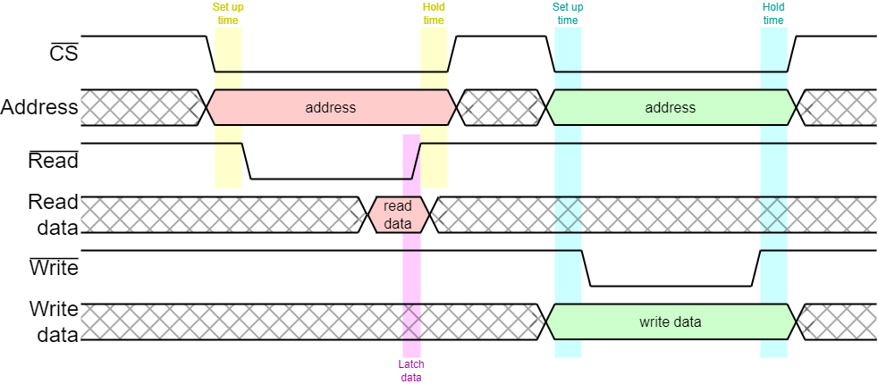
- Asynchronous bus (timed by strobes from master)
- Timing generated by clocked circuit but no clock on the bus
- Everything happens successively during cycle
- Cycle may be extended with ‘wait’ states
In our SoC in the lab. this is done in the framestore SRAM interface,
although the timing there is known and input data are resynchronised
within the interface.
Asynchronous bus
The example above is not the only protocol for bus timing. Another
common approach uses an enable (CE) and a direction signal to specify
the operation.
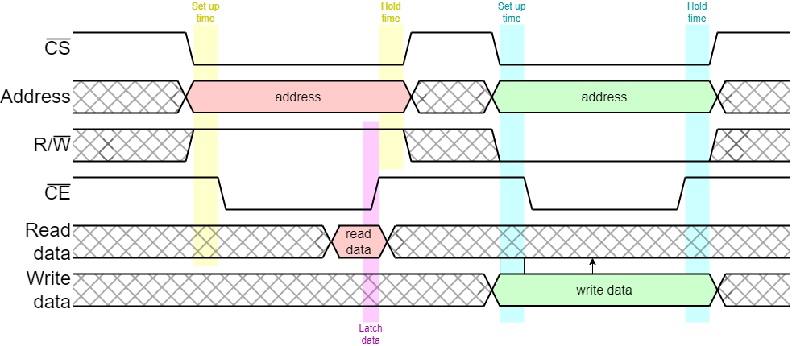
Although the data is shown here as unidirectional, off
chip buses typically use bidirectional data signals so must
be either reading or writing when active. This is due to pin
restriction on the package (and wiring on the PCB).
On chip buses are limited by distance but not (particularly)
restricted by width because there is a considerable wiring resource on
a chip. However on-chip signals are now ‘universally’
unidirectional so that electrical buffers can be inserted along the
wire to keep switching edge speed reasonably rapid.
Wiring
Let's elaborate on that point.
A simple model of ‘load’ on a gate estimates a
‘lumped†’ capacitance. 200 μm
of wire will have twice the capacitance of 100 μm. Assuming
the same driver, the edge time on the longer wire will be
correspondingly greater; thus the signal delay will be greater.
Possible solutions:
- Increase the drive strength.
- Decrease the load.
However the wires also have resistance which slows down the edge more
at greater distances from the driver. The first solution is therefore
not as effective as might be though at driving longer wires.
The load can be decreased by ‘cutting’ the wire and
inserting buffers (amplifiers) at intervals. These also insert delay
but keep the edges fast.
Buffers have an input and an output so the wires, necessarily, are
unidirectional.
Buffers
The term “buffer” as applied here refers purely to an
electrical amplifier. “Buffer” is also used to refer to,
for example, latches which hold data and are thus part of the logic.
Beware of potential confusion!
†I.e. all the capacitive load is in a single place.
In practice it is distributed along the length of the wire
which, itself, is resistive: thus the model can be somewhat more complicated.
Single-master vs. multi-master buses
Simple buses are often ‘single-master’, i.e. there is only
one initiator which commands all transactions. More complex
systems may have ‘multi-master’ buses where the right to
initiate a transaction is transferred; this typically requires some
form of arbitration.
A simple multi-master example might be a CPU with DMA support. Here
the CPU might act both as default bus master and arbiter, with
the DMAC requesting (and being granted) bus cycles. More complex
systems may have more equality and an external arbiter.
Although often still referred to as ‘buses’ many SoCs have
multiple, parallel communications channels and their ‘bus’
structure is more akin to a Network-on-Chip (NoC). AXI systems
(q.v.) have this sort of characteristic. This form of connection is
probably better described as a
“switched
fabric” than a ‘bus’ although the
shorter term is still in common use!
Overview of some bus standards
AMBA is an open standard (or set of standards) which have become a de
facto standard for on chip interconnect. The standards specify the
list of signals used in the interconnection and their timing
relationship on a cycle-by-cycle basis. It was first introduced by
ARM Ltd. in the 1990s and has been developed continually, since.
AMBA comes in several ‘flavours’, including:
- Advanced Peripheral Bus (APB)
- Advanced High-performance Bus (AHB)
- Advanced eXtensible Interface (AXI)
which are used here as examples.
The different standards represent different points in the
complexity/performance spectrum. Thus APB is simple but slow –
intended for communication with many, low-bandwidth peripheral
devices. Because peripheral accesses are rare in comparison with
memory reads and writes a few slow cycles do not impact overall
performance significantly.
AXI is better suited for high-bandwidth communications. An example
would be the data bus from a memory controller which was frequently
used. It allows bursts of data to be communicated and several
outstanding transactions at any time, so operations can be pipelined.
The price is a significant increase in complexity at the interfaces.
APB is basically a straightforward microprocessor bus. The bus master
puts out a command, address and (possibly) write data or (possibly)
latches read data at the end of the cycle.
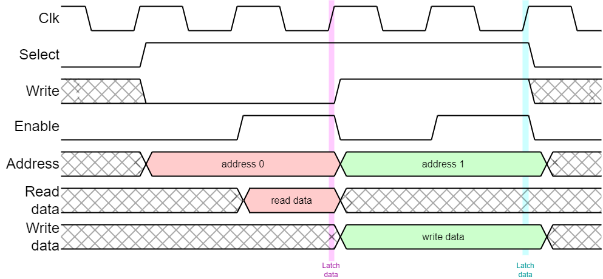
- Simple
- Single master
- Used for low speed peripherals
APB is a simple bus model where commands and addresses – and
possibly write data – are output at the beginning of the bus
cycle and any read data is read at the end of the cycle. Thus there
needs to be adequate time for a ‘round trip’ within the
bus cycle.
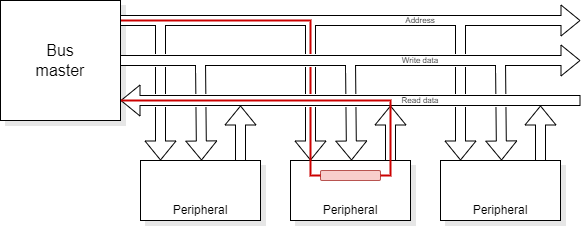
The first APB spec. performed every transfer unconditionally in two
clock cycles. This was subsequently extended so that slow peripherals
can insert extra ‘wait’ states to extend the cycle
time if they cannot respond quickly enough. Wait states may be
acceptable when communicating with peripheral devices because such
accesses are infrequent so the penalty is small.
Another extension was an error signal, so the failure (abort) of a bus
cycle can be signalled.
Bus Errors
When a bus master is designed it is not always determined what will be on the
other end of it.
- On a ‘motherboard’ different ‘expansion
cards’ may be inserted
- On a SoC the hardware is fixed – but SoC designs may differ and the
designer may not want to customise the master each time
A bus transaction may be successful – or it may fail for a
number of reasons:
- Segmentation fault: the address is illegal for that process at that time:
- Outside the allowable range for that process.
- Writing to a ‘read’ only area.
- User access to a privileged (operating system) address.
- Page fault: the address is legal but there is no physical memory
present at the time.
Segmentation faults are typically ‘fatal’ for a thread;
page faults require some rearrangement of the memory map.
Many of these are detected by a Memory Management Unit (MMU) before
reaching the bus. However, some requests are not, or cannot be,
trapped there and cause a bus cycle.
A bus will typically have a status signal returned from the slave
device which indicates whether the cycle has completed successfully or
if there was a bus error and it has been aborted.
- On a read bus error any returned ‘data’ will be invalid.
- On a write bus error the write did not complete.
Example
A peripheral I/O device may have only a small number of registers
(say 16) but be allocated a ‘page’
(say 1 KiB) of the memory map. It could indicate if an
access was apparently to that device but not to one of its valid
registers. Alternatively, it could indicate an attempt to write to a
read-only register.
This cannot be done by a typical MMU which will not resolve
translations to individual words, only pages.
AHB is a pipelined bus intended to perform one transfer per
clock cycle.
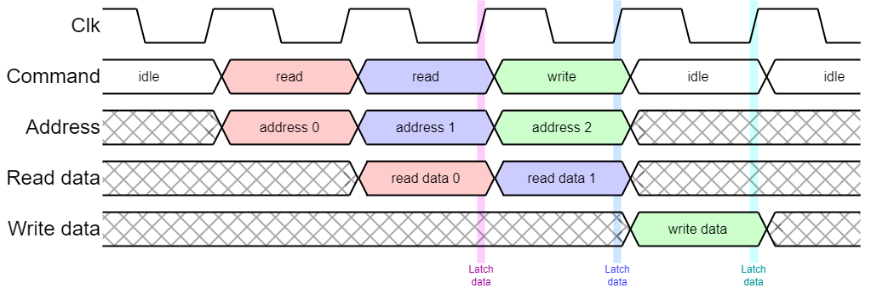
- Moderately complex.
- Multi-master via centralised arbitration.
- Bus cycles can be extended or aborted.
- Used for processor buses on medium performance devices (e.g. ARM9).
AHB increases performance by pipelining. For example, in a read
operation it outputs an address and status asking for the read on a
rising clock edge. This is decoded and selects the appropriate slave
device.
On the next active clock edge the slave is expected to latch the
address and start the read. At this point the bus master can start
the next cycle.
On the next active clock edge the master must:
- latch the first input data.
- provide output data if the second cycle was a write operation.
- start the third cycle (if appropriate).
This sequencing allows faster bus throughput but causes certain difficulties
when things don't go smoothly.
- If a peripheral is slow and needs to insert wait states it does this in
the data phase. Other peripherals need to monitor this because, if
one is being addressed ‘next’ it needs to defer starting.
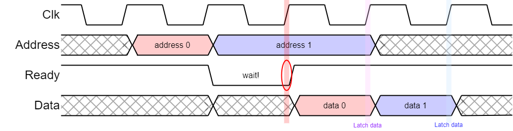
- If a bus cycle is to abort the ‘pipeline’ needs to be
‘flushed’. All slave devices must watch for other devices
aborting so they don't start the subsequent cycle, which may already
be being requested.

- The wait cycle is detected by other bus targets (specifically
the target of the following transfer).
- The second cycle is abandoned by all concerned: the bus becomes
ready without an active follow-up cycle.
- The abort persists (whilst ready) causing the bus master to abort the
first transfer (with all cycles still ‘in order’).
Like instructions in a processor, keeping communications cycles in
order makes recovery from the exception (abort) very much simpler.
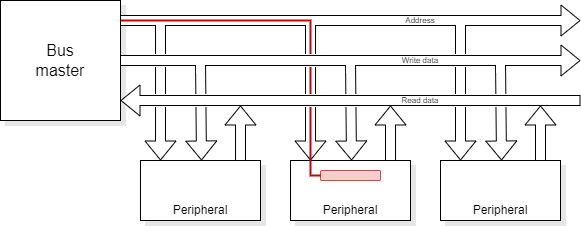
AHB operation is pipelined, so that as one set
of data is transferred
the subsequent address can be sent.
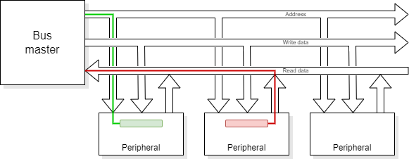
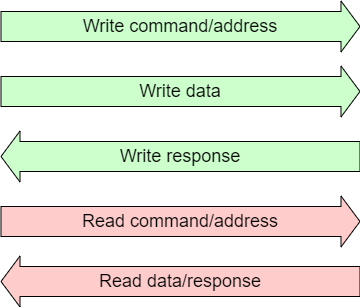
A different philosophy:
Write command/address
Write data
Write response
Read command/address
Read data/response
- Oriented to transactions rather than ‘bus cycles’
- Uses (semi-) independent channels to send information
- Each channel is unidirectional
- may be pipelined
- Latency may be many cycles
- Throughput improved by data bursts
- May have out-of-order transaction completion.
- Multi-master: in fact closer to a network than the traditional bus.
- A write transaction comprises a write command {address, burst
size} accompanied by a burst of write data and concludes with a
response which may signal an abort.
- A read transaction is similar but the data burst and
status response are returned together.
- A transaction ID on each channel allows elements
from multiple outstanding transactions to be matched appropriately.
AXI is more like a network (or ‘switched fabric’) than a
bus. Transactions can be initiated from various units and will arrive
at various destinations. In between they may be arbitrated and
multiplexed as desired. The packet IDs allow steering so that the
correct response is returned to the correct initiator. AXI is quite
widely supported and has gone through several generations: at time of
writing the most recent was AXI4.
Example: Read transaction
- Master sends a command on read channel specifying an address,
data size and burst length. Command also has an ID tag.
- … other things may happen …
- Returned data burst arrives with appropriate ID tag and response status.
- If okay, routed appropriately.
- If abort recovery may be complex, including receiving but discarding later data packets already in transit.
AXI: pipeline detail
Data can be pipelined to reduce the distance travelled per clock cycle
and, consequently, allow faster clocking and higher throughput.
Protocol
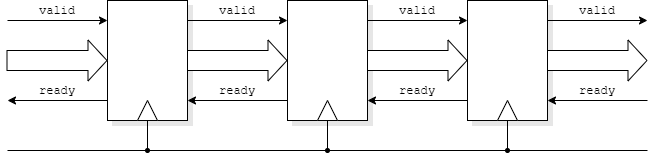
- Data in a stage asserts valid, downstream.
- A stage which will accept data asserts ready, upstream.
- If valid and ready are both active, a transfer takes place.
This is faster than, for example, a handshake which might go through several
states and take (no fewer than) four clock cycles to complete one operation.
Data can move on every cycle if a pipeline stage can accept and pass on data
simultaneously. They may work on this assumption, providing they can cope
with buffering data even if the output is denied.
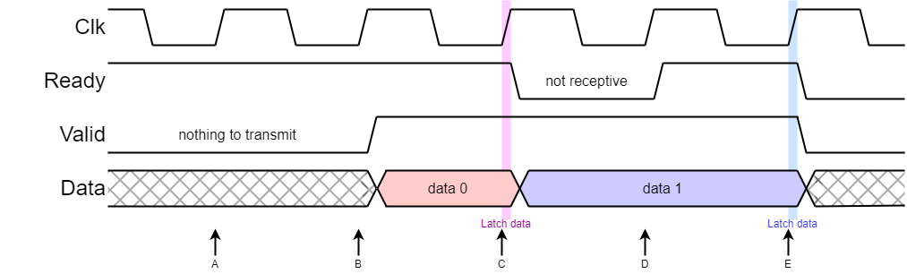
- A Receiver ready, transmitter empty
- B Transmitter just filled, attempting to output
- C Transfer: receiver realises it needs to stall
- D Stall, waiting for receiver; receiver now has capacity again
- E Transfer: receiver wants to stall but no new data anyway
AXI-like pipeline
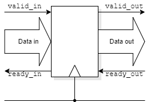
Consider a synchronous AXI pipeline stage.
The intention is to pass data on every clock cycle.
Data moves across an interface if both valid and ready are active.
If you indicate (upstream) you are willing to accept data
(ready)
that is a commitment.
There is not time to propagate a control signal throughout the pipe!
- Solution 1
- Don't indicate possible acceptance until you are empty
- Benefit: simple to design
- Consequence: the pipeline will never be more than half full
- Solution 2
- Be prepared to accept new data even if you couldn't pass on the current packet
- Benefit: full bandwidth available
- Consequence: twice as many flip-flops in each stage, (half are normally unused)
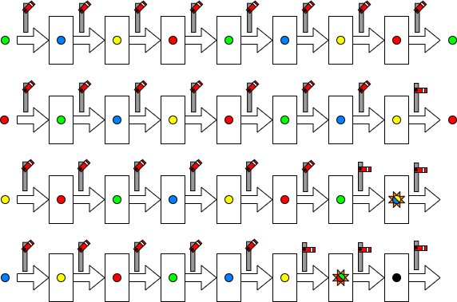
Single buffer per stage
If a blockage propagates backwards at one stage per clock data in adjacent
latches will collide – some data will be lost.
(Figures will ‘pop out’.)
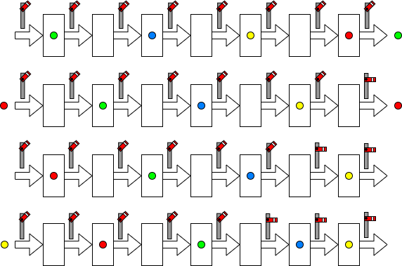
With sparser occupancy data can stop safely; however throughput is
reduced.
This is much like the traffic on a road.
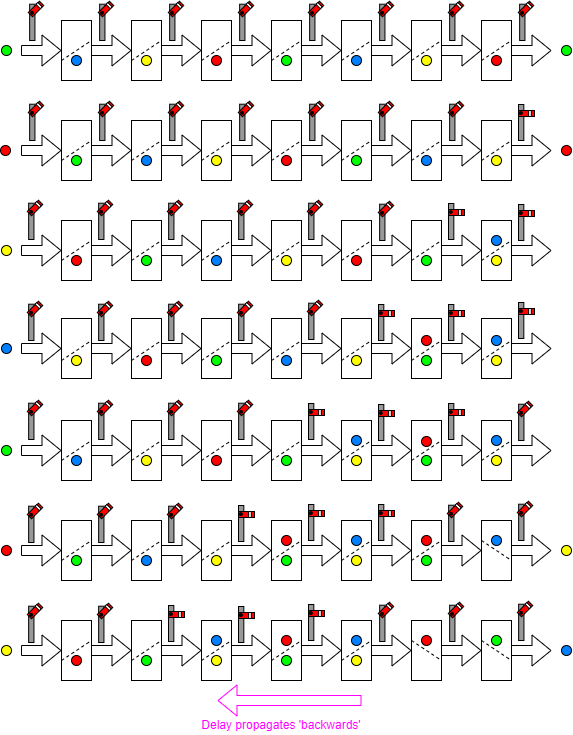
Two buffers per stage
With extra buffering it is possible to achieve ‘full’
throughput and still stall the pipe locally.
The disadvantage is the overhead in extra latches.
Note that in some pipelines there will be buffering implicit in the
architecture to ‘even out’ such flow irregularities.
Examples could include network routers storing and forwarding
packets.
Back/up to Interconnection.
Forwards to complex interconnection.